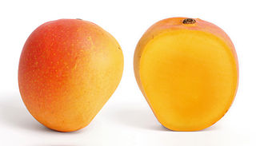

Mangoes

Mangoes are a delicious tropical fruit. They are pink/orange in color and have a delightful fragrance. Werewolves and vampires both shun mangoes, but they have no effect on zombies.
Supplied by FruitCo, Inc.